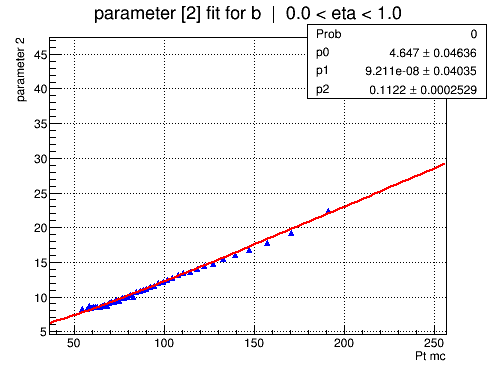
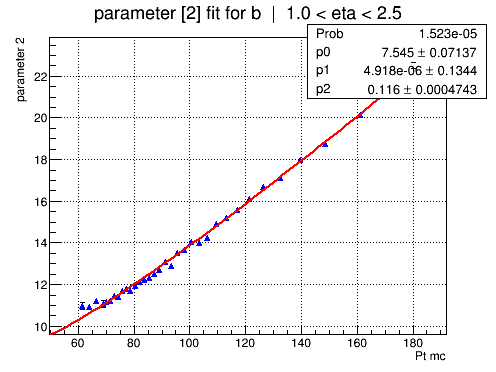
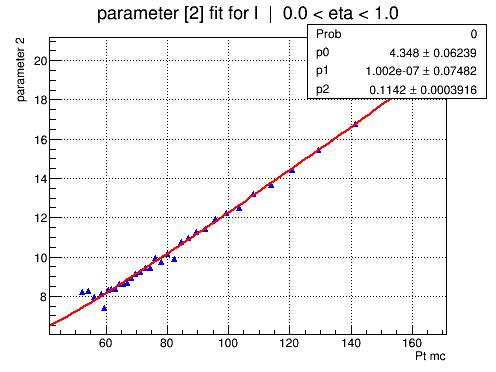
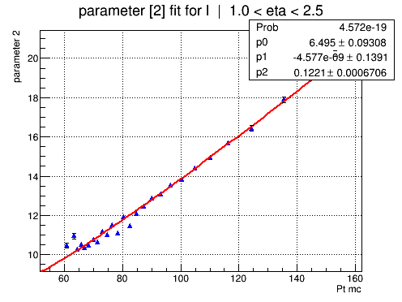

Parameter 2 overview
SBF: [0]*(0.65*exp(-0.5*((x-([1]))/([2]))**2)+(1-0.65)*exp(-0.5*((x-([3]))/([2]+[4]))**2))
ABF: sqrt([0]*[0] + x*[1]*[1] + x*x*[2]*[2])
Run: V10_full_TTjets
Sample: /scratch/tklijnsm/V10_full_jets_TTJets.root



